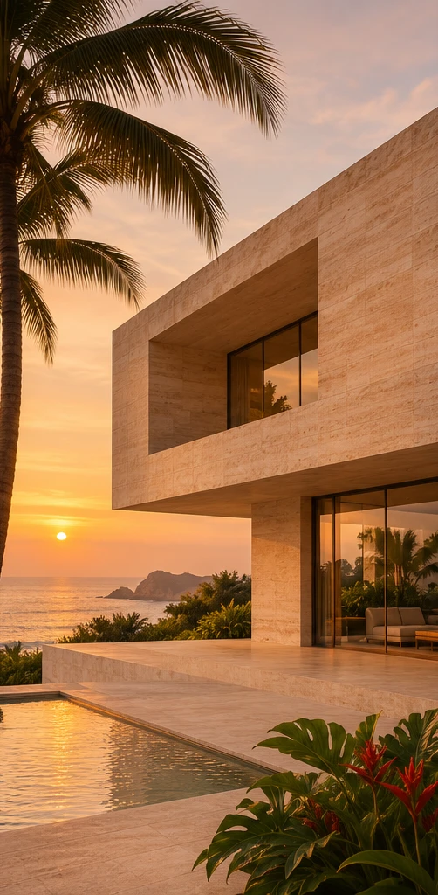

ARQUITETURA E INTERIORES
Espaços para
viver bem.
Arquitetura que aproxima a vida de dentro da paisagem lá fora.
Explorar projetos ↘PORTFÓLIO CONCEITUAL
Casa Pátio

Entre a pedra e o jardim
Uma residência conceitual que combina volumes em pedra clara, sombra e vegetação tropical. Os ambientes se voltam para o pátio para aproveitar a luz do fim da tarde.
Ver ficha do projeto
- Tipo
- Residencial
- Conceito
- Integração entre interior e exterior
- Materiais
- Pedra natural e madeira
O ESTÚDIO
Forma Arquitetura
Marca fictícia criada para demonstrar um site de arquitetura, com apresentação do estúdio, galeria e ficha de projeto.
Quero um site nesse estilo ↗